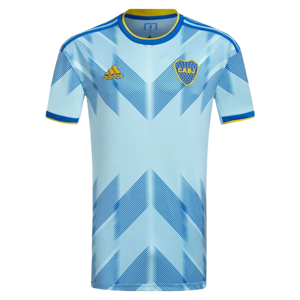
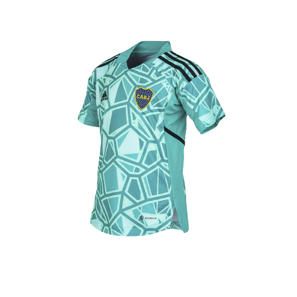

Camiseta Titular Boca Jrs 23/24
Camiseta Titular del Club Atletico Boca Juniors para la temporada 23/24, con los caracteristicos colores azul y oro.
Size

Camiseta Alternativa Boca Jrs 23/24
Camiseta Alternativa del Club Atletico Boca Juniors para la temporada 23/24, en honor a la camiseta utilizada por la institucion a mediados de los años '50.
Size

Tercera Camiseta Boca Jrs 23/24
Tercera Camiseta del Club Atletico Boca Juniors para la temporada 23/24, inspirada el en iconico puente del barrio de La Boca.
Size

Camiseta Arquero Boca Jrs 23/24
Camiseta Arquero del Club Atletico Boca Juniors para la temporada 23/24, inspirada en la que el arquero del club usa para darlo todo en el campo de juego.